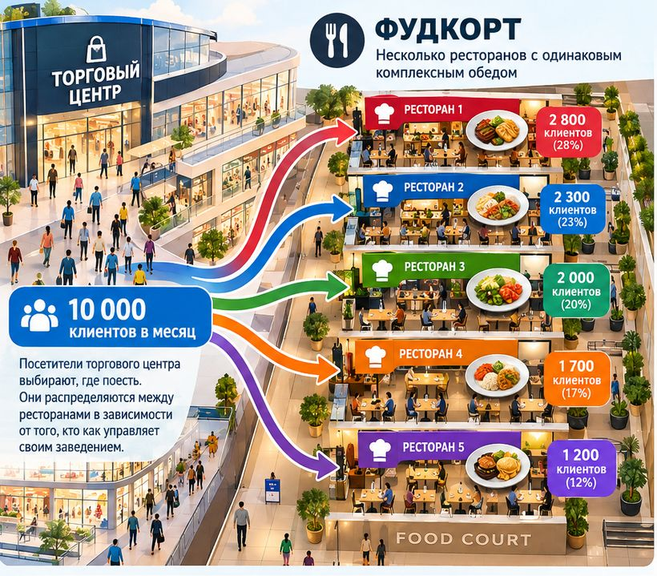
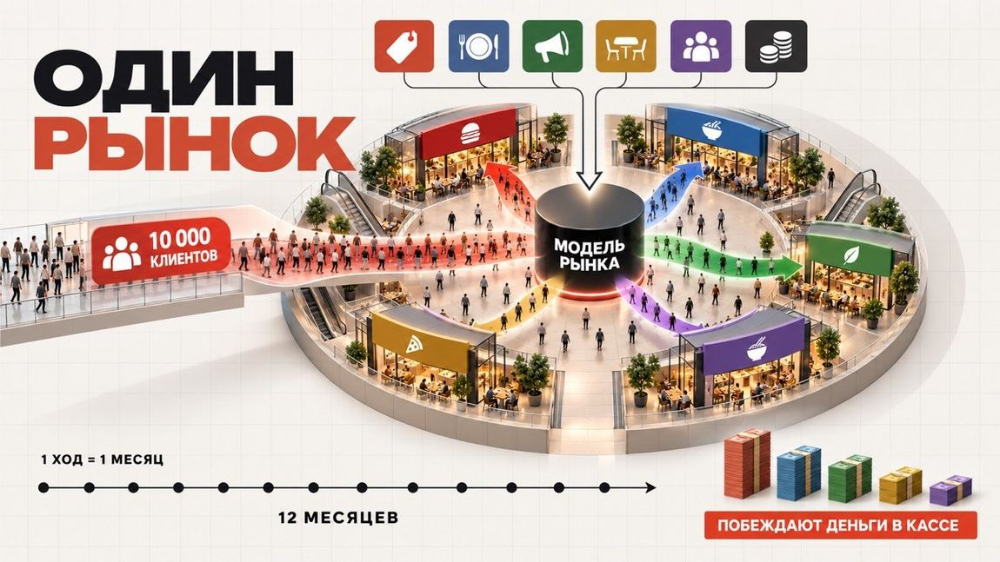
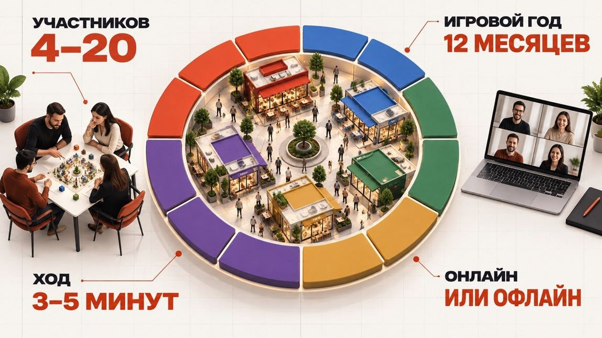
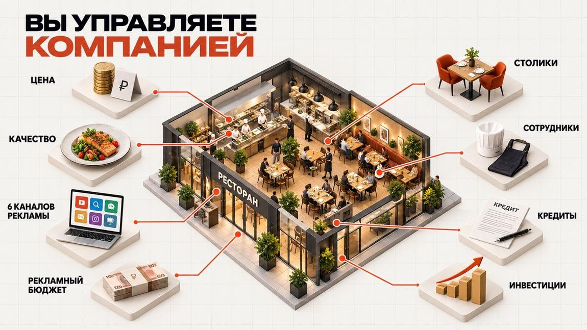
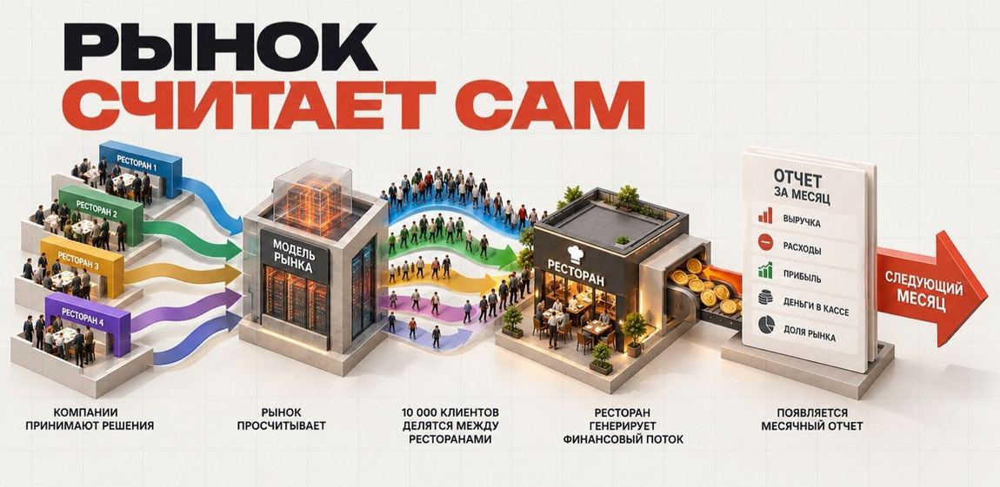
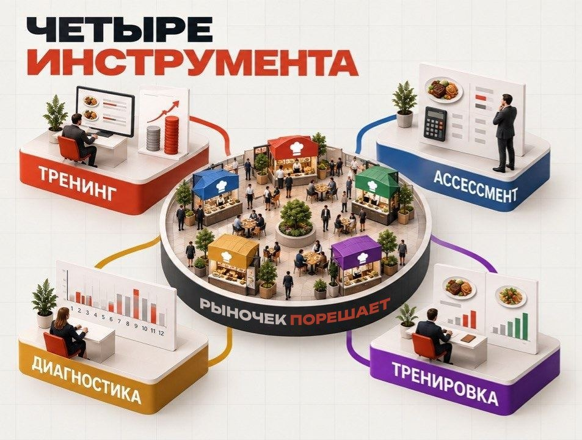

Инструктажа не будет
Вы садитесь и сразу играете. Механика становится понятной за первые месяцы — так же, как в бизнесе, где перед открытием никто не выдаёт инструкцию и права на ошибку не спрашивает.
Открываете дело или уже управляете им — два часа за игровым столом покажут то, на что в жизни уходят месяцы бизнес-школы и годы работы не на том рынке.

Несколько компаний садятся за один рынок и начинают бороться за одних и тех же клиентов. Каждый ход — игровой месяц. Вы назначаете цену, вкладываетесь в качество, выбираете рекламные каналы, добавляете столики, нанимаете людей, берёте кредит.
Дальше рынок считает сам. Десять тысяч клиентов распределяются между всеми игроками — не поровну, а в зависимости от того, у кого сочетание цены, качества, рекламы и пропускной способности выглядит для них привлекательнее. Это решает модель, а не ведущий.
Вы видите свой отчёт: выручку, расходы, прибыль, остаток в кассе и долю рынка. Потом наступает следующий месяц.
В конце игры побеждает тот, у кого больше денег в кассе.

Вот вся игра в одном экране. Представьте, что красный ресторан — это вы. Снизили цену — к вам пошёл поток, но каждый чек стал тоньше. Подняли качество — люди возвращаются, можно держать цену выше. Влили рекламу — узнаваемость выросла, но деньги ушли из кассы уже сейчас.
Двигайте рычаги — цена, качество, реклама, зал — и сразу видите, как перетекают клиенты между пятью ресторанами и что в итоге остаётся у вас: выручка, прибыль, доля рынка. Никто не ставит оценок. Считает только рынок. В живой игре так же — только двенадцать месяцев подряд и за соседним столом такие же игроки. Здесь цифры упрощены, но логика ровно та.
Красный на графике — это вы
Деньги в кассе · месяц 1 из 12
2 000 000 ₽
Клиенты уходят туда, где выгоднее и вкуснее
Здесь показан год — как в Лиге 12. Конкуренты стоят на месте; в живой игре они ходят одновременно с вами, и это меняет всё.

Вы садитесь и сразу играете. Механика становится понятной за первые месяцы — так же, как в бизнесе, где перед открытием никто не выдаёт инструкцию и права на ошибку не спрашивает.
Три-пять минут на ход. Цена, качество, рекламные каналы и бюджет, столики, персонал, кредиты. Что делают конкуренты — вы не знаете.
Модель распределяет клиентов между всеми игроками и пересчитывает деньги. Никаких оценок ведущего и симпатий — только экономика.
Отчёт по своей компании: выручка, расходы, прибыль, касса, доля рынка. И общая таблица, где видно, кто вырвался вперёд.
Стратегия проявляется не в одном ходе, а в серии. Ошибка третьего месяца догоняет в седьмом, и это самое полезное, что даёт симулятор.
После последнего месяца разбираем, кто что делал и почему получилось именно так. Основное обучение происходит здесь.

Ни один инструмент не работает сам по себе. Низкая цена без качества приводит клиентов, которые не возвращаются. Реклама без пропускной способности приводит очередь, которую некому обслужить. Кредит закрывает кассовый разрыв и создаёт новый.
В игре вы управляете рестораном на фудкорте. Это не значит, что игра про рестораны.
Замените комплексный обед на подписку, монтаж окон, стрижку, юридические услуги, курс английского или партию товара из Китая — модель не изменится ни на шаг. Ограниченный спрос. Конкуренты, которые борются за тех же людей. Цена против качества. Реклама, которая может не окупиться. Мощность, упирающаяся в деньги. И кассовый разрыв, который наступает раньше прибыли.
Фудкорт выбран потому, что его правила понятны за две минуты кому угодно, без отраслевого контекста. Дальше начинается ваш собственный бизнес — только без риска потерять на нём настоящие деньги.

Одинаковая механика подходит любому бизнесу: меняется только вывеска.
Спросите у нейросети стратегию — получите грамотный, законный и совершенно стандартный ответ. Беда в том, что на реальном рынке против вас играет не нейросеть, а живой человек за соседним столом.
Это как в шахматах. Партия против программы и партия против человека — две разные игры. Программа ищет лучший ход. Человек упрямится, блефует, демпингует назло, копирует вас с опозданием на два месяца или вдруг делает то, чего не заложил бы ни один расчёт. Именно к этому нельзя подготовиться по учебнику.
Поэтому выгоднее всего садиться за стол с теми, кто опытнее вас. За один вечер вы увидите чужие ходы, которых нет ни в одном руководстве, и поймёте, как люди на самом деле ведут себя на рынке.
Можно построить безупречную компанию. Выверенная цена, честное качество, реклама в правильных каналах, зал ровно под спрос — всё сходится на бумаге. И проиграть, потому что конкурент рядом повёл себя не так, как вы заложили в свою модель.
Судьбу дела решает не внутреннее устройство компании, а то, что происходит между вами и соседним столом. Этого не покажет ни один консультант — ни живой, ни искусственный.

Навыки отрабатываются в действии. Не конспект про юнит-экономику, а решение, которое через месяц обернулось убытком.
За одну игру видно, как человек считает, решает при неполных данных и держит удар. Резюме такого не показывает.
Управленческие привычки проявляются в первые же ходы. Свои сильные и слабые места вы увидите сами, без чужих оценок.
Игру можно повторять: сменить стратегию, попробовать иначе и сравнить результат на той же модели.
Проверить стратегию и управленческие привычки там, где ошибка стоит только очков.
Увидеть, как команда принимает решения под давлением и ограничением по времени.
Ассессмент и обучение в одном мероприятии, с наблюдаемым поведением вместо анкет.
Понять цену типичных ошибок до того, как за них придётся платить своими деньгами.
Лиги отличаются длиной игры и тем, кто сидит за столом. Выберите ту, что описывает вас сегодня.
Бизнеса ещё нет
2 000 ₽за команду, а не за человека
Вы только собираетесь открыть дело и хотите понять цену типичных ошибок раньше, чем заплатите за них своими деньгами.
Дело уже работает
8 500 ₽за команду, а не за человека
У вас до десяти сотрудников и оборот до миллиона долларов в год. Пора проверить, что будет со стратегией на длинной дистанции.
Средний и крупный бизнес
250 000 ₽за команду, а не за человека
Стратегическая сессия: проверить гипотезу на длинном горизонте, посмотреть на управленческую команду в деле и разобрать решения по шагам.
Цена — за команду целиком. Людей в команде сколько угодно: приходите один, вдвоём или отделом. В одной игре встречаются от четырёх до двадцати команд — чем больше за столом, тем плотнее рынок и тем честнее результат.
С дешёвой ошибки. В игре вы за один вечер проходите путь, на который в жизни уходит год: назначаете цену, вкладываетесь в рекламу, упираетесь в кассовый разрыв. Ошибка стоит очков, а не накоплений. Зато когда то же самое случится с вашими деньгами, вы это уже проходили и знаете, чем оно заканчивается.
Три лиги: 2 000 ₽ за команду, если бизнеса ещё нет; 8 500 ₽, если дело уже работает — до десяти сотрудников и оборот до миллиона долларов в год; 250 000 ₽ за стратегическую сессию для среднего и крупного бизнеса. Цена всегда за команду целиком, людей в команде сколько угодно.
Только двумя вещами: длиной игры и тем, кто сидит за столом. Лига 12 — двенадцать ходов среди таких же начинающих. Лига 24 — двадцать четыре хода среди действующих предпринимателей. Лига 36 — тридцать шесть ходов в кругу владельцев среднего и крупного бизнеса. Сама модель рынка во всех лигах одна и та же, под отрасль мы её не настраиваем.
Месяцы игровые, а не календарные: в жизни вы не ждёте ни года, ни трёх. Вся игра проходит за одну встречу, один игровой месяц — это один ход длиной три-пять минут. Разница между лигами в том, сколько таких ходов вы успеете сделать и насколько далеко будет видно последствия ваших решений.
И так, и так. Механика одинаковая: вы принимаете решения, модель считает, все видят результат. Офлайн добавляет живые переговоры за соседним столом, онлайн — возможность собрать команду из разных городов.
Нет. Инструктажа перед игрой не будет — это часть замысла. Механика становится понятной за первые месяцы, ровно как в бизнесе, где перед открытием никто не выдаёт инструкцию.
На курсе вам рассказывают про юнит-экономику. Здесь вы сами назначаете цену, теряете клиентов и смотрите в отчёт, где видно, что реклама не окупилась. Никто не ставит оценок: считает только рынок.
Нейросеть выдаст грамотную и стандартную стратегию — и это ровно то, чего на рынке не происходит. Там против вас играют люди: они упрямятся, блефуют, демпингуют назло и делают ходы, которых не заложит ни один расчёт. Игра даёт то, чего не даст ни один консультант — реальное поведение конкурентов, а не выкладку из учебника.
Да. Команда из одного человека — это тоже команда, цена та же. Против вас будут играть другие участники, а не ведущий.
Ошибки здесь стоят только очков. Всё остальное — как в жизни.